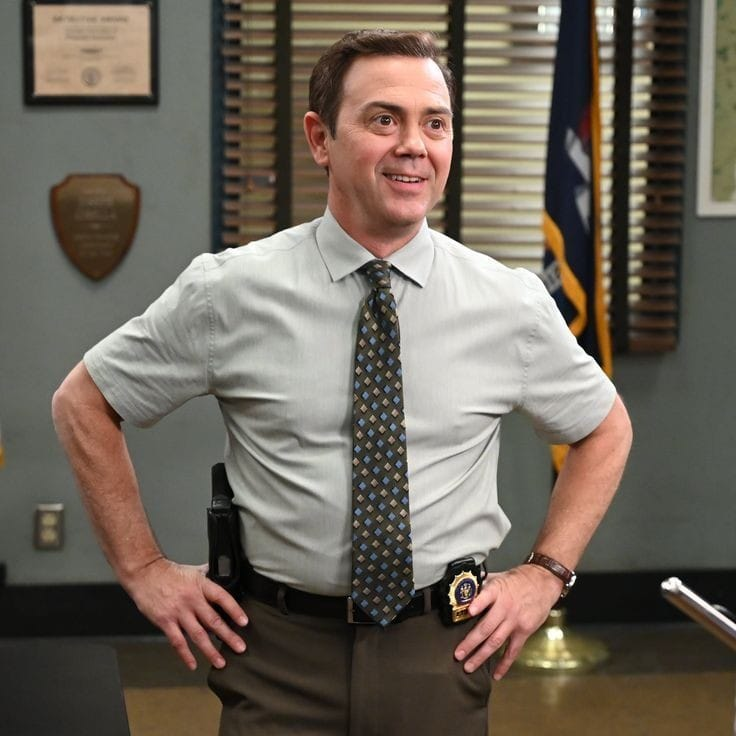

Brooklyn Nine-Nine é uma série de comédia policial ambientada na 99ª Delegacia de Polícia do Brooklyn, em Nova York. Com uma mistura envolvente de humor leve,situações inusitadas e uma dinâmica de personagens carismáticos, a série acompanha o cotidiano de uma equipe de detetives enquanto lida com investigações criminais, problemas pessoais e as peculiaridades do ambiente de trabalho.
Onde assistir?
Personagens
Jake é um detetive talentoso do 99º distrito da polícia de Nova York. Ele se destaca por sua capacidade instintiva de resolver casos complexos, mesmo que, muitas vezes, pareça mais uma criança grande do que um policial. É sarcástico, brincalhão e completamente apaixonado por Duro de Matar. Apesar da imaturidade, tem um grande coração e um forte senso de justiça. Ao longo da série, amadurece bastante, especialmente ao se envolver romanticamente com Amy Santiago e ao encarar desafios maiores na carreira e na vida pessoal.
Sargento da delegacia, Terry é conhecido tanto pela força física impressionante quanto pela sua gentileza e sensibilidade. Antes um detetive ativo, ele passou a ocupar uma posição mais administrativa após o nascimento de suas filhas gêmeas, por medo de se machucar e deixá-las sem pai. É um verdadeiro líder, sempre preocupado com sua equipe, e tem um grande amor por iogurte, musculação e seus colegas de trabalho. É o equilíbrio perfeito entre autoridade e acolhimento.
Inteligente, extremamente organizada e perfeccionista, Amy é uma detetive dedicada que sonha em subir na hierarquia da polícia. É movida por metas, listas e prazos, além de ter um enorme respeito (e uma leve obsessão) por seus superiores, principalmente o Capitão Holt. Com o tempo, ela aprende a se soltar mais, especialmente após desenvolver uma relação amorosa com Jake Peralta, com quem forma uma parceria divertida e cheia de química. Sua ambição é equilibrada por um senso de dever forte e uma grande lealdade à equipe.
Charles é o detetive mais entusiasmado, leal e peculiar do esquadrão. Melhor amigo incondicional de Jake, ele está sempre pronto para apoiar suas ideias (mesmo as mais absurdas). Amante da culinária gourmet e de tradições exóticas, Boyle é frequentemente o alívio cômico em situações desconfortáveis, mas também demonstra muita coragem e coração. Embora seja socialmente desajeitado, ele tem uma bondade genuína que o torna indispensável na equipe.